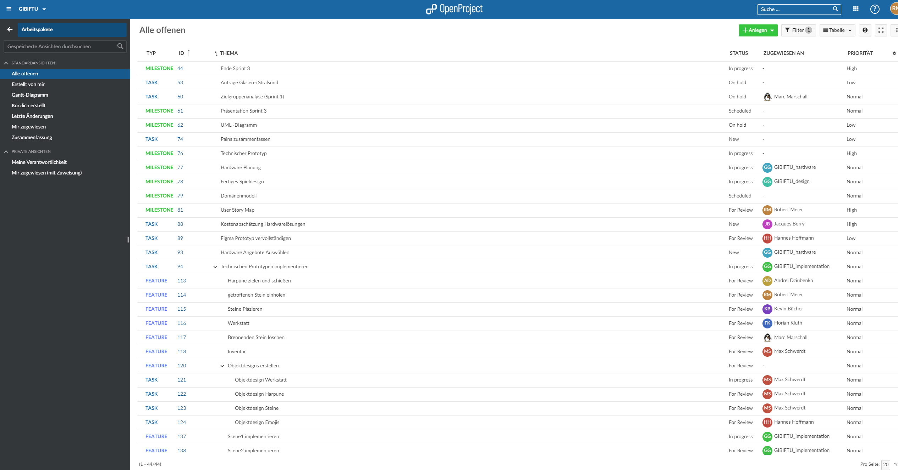
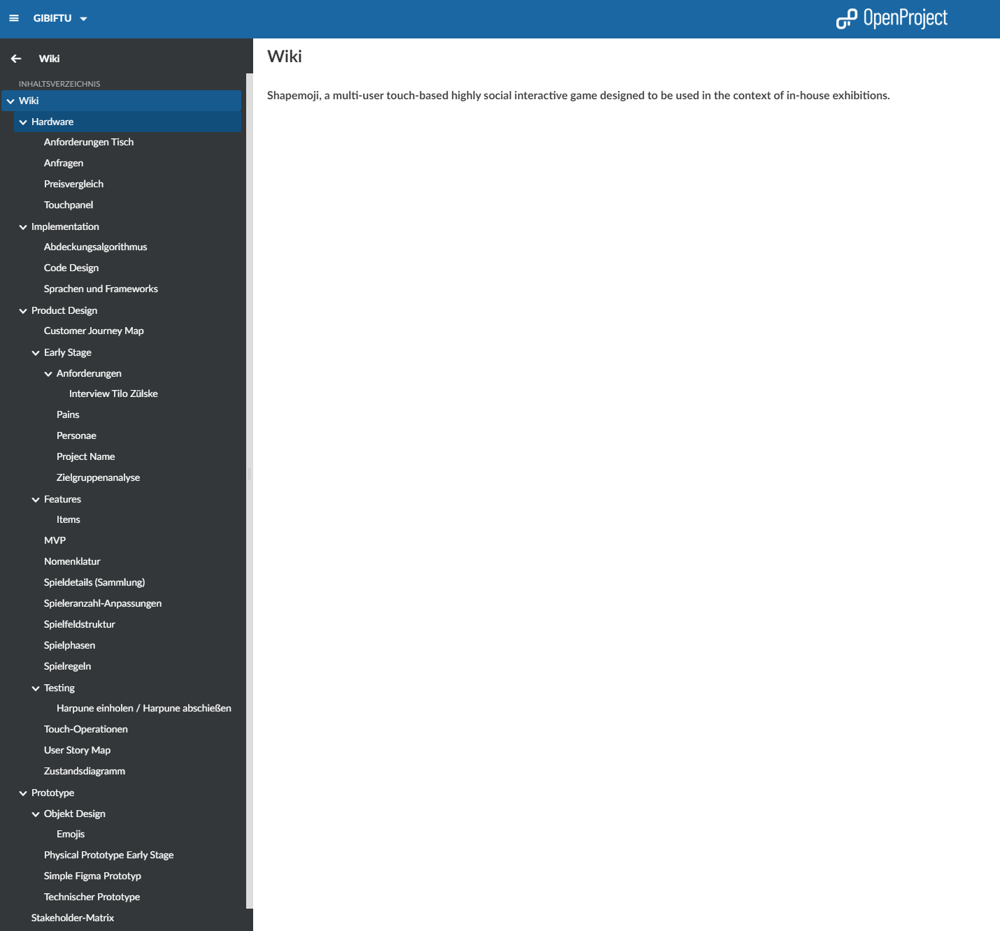
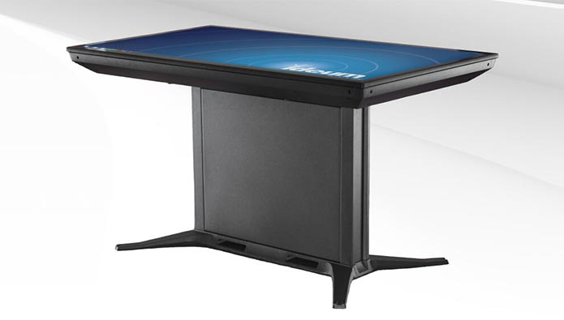
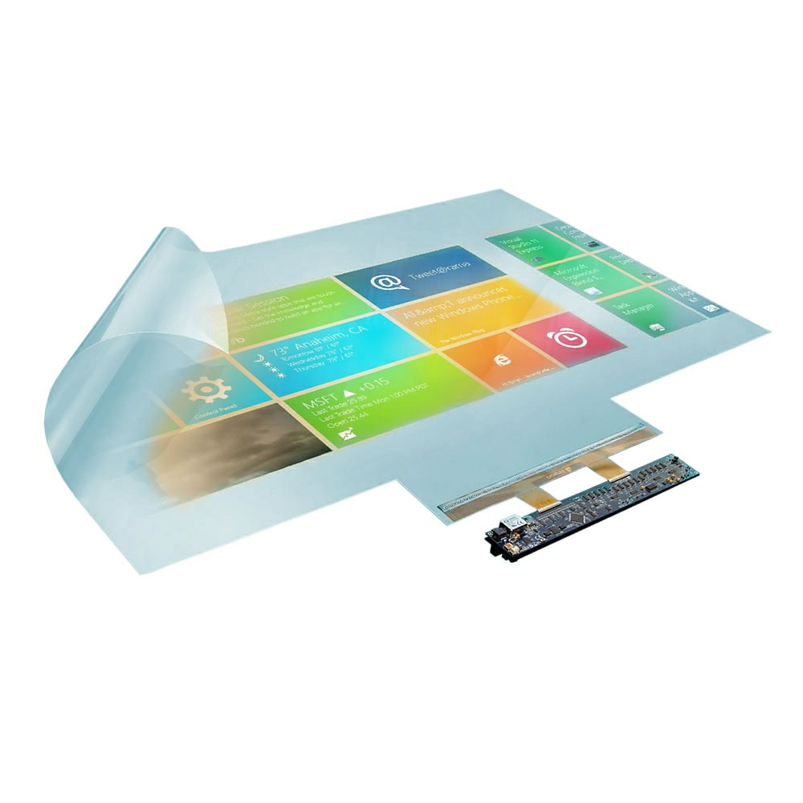
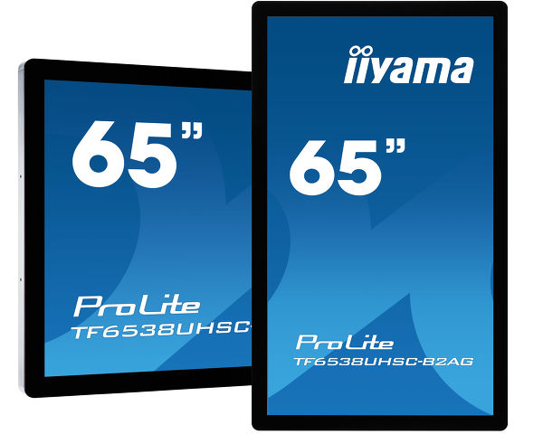
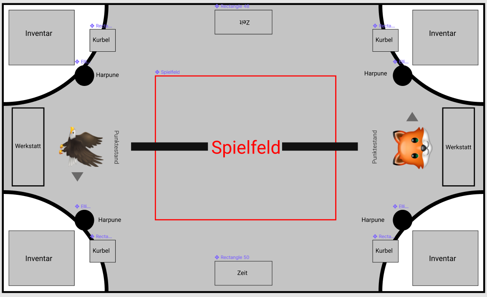
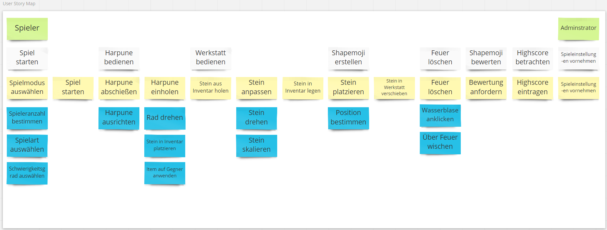
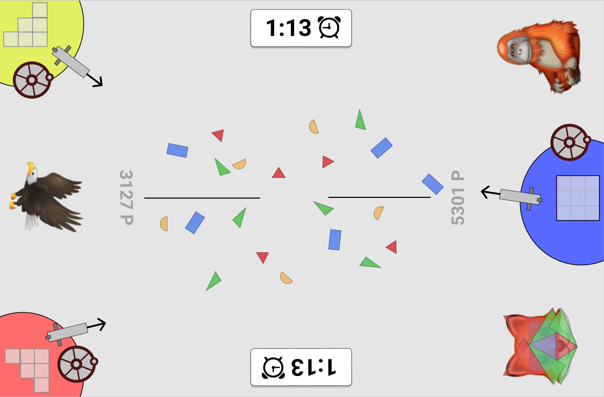
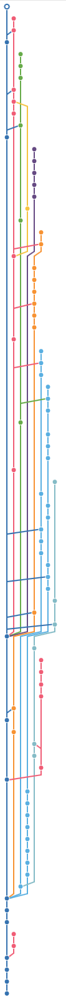

Software-Engineering II SS2020
Shapemoji
Action für den Tag der Technik
Vorgehensweise
Verzeichnis
Teamstruktur
Tools
Chronologie
Ergebnisse
Hardware
Design
Implementation
Weitere Punkte
Teamstruktur
Teamleitung
Marc Marschall
Team 1
Design
Mitglieder:
Max Schwerdt
Robert Meier (Teamleiter)
Hannes Hoffmann
Andrei Dziubenka
Jacques Berry
Team 2
Hardware
Mitglieder:
Max Schwerdt
Marc Marschall
Florian Kluth
Kevin Bücher (Teamleiter)
Jacques Berry
Team 3
Implementation
Mitglieder:
Hannes Hoffmann (Teamleiter)
Max Schwerdt
Marc Marschall
Robert Meier
Andrei Dziubenka
Florian Kluth
Jacques Berry
Tools
Open Project
Werkzeug der Projektplanung
Enthält:
Kalender
Tasks
Milestones
Features
Task
Wiki
Integration mit GitHub
Besprechungen
Agenda
Protokoll
Tasks

Tasks
Wiki
Werkzeug zur Dokumentation

Meetings
Arten
alle Gruppenmitglieder
Teams
individuell
Besprechnung
in OpenProject
Chronologie
Phase 1: Zusammenführung der Ergebnisse
Phase 2: Arbeit in Gruppen
Phase 3: Zusammenführung und Außendarstellung erarbeiten
Ergebnisse
Hardware
Anforderungen
Verstaubarkeit
Schneller/Einfacher Aufbau
Wartbarkeit
Außreichende Stabilität (spontanes Auflehnen)
Transportierbarkeit
durch Türen passend
Mögliche Konzepte
Touchtisch

Probleme mit Touchtischen
nur B2B
Preis meist über Budget
Schutzrechtliche Einschränkungen
Touchfolie

Probleme mit Touchfolien
fast keine deutschen Anbieter
Eigenbau schwierig -> Stabilität weniger gegeben
Glasplatte muss extra besorgt werden
Gesamtsumme knapp unterm Budget
Touchpanel

Warum Touchpanel?
Preis des Panels bei knapp 4700€
Eigenbau umfasst nur Gestell -> preislich recht günstig
hohe Stabilität + bessere Wartbarkeit
Gesamtsumme bei ca. 6000 - 7000€
Design
Spielfeldaufbau

Testing
Spielkonzept
Werkstatt
Anzahl Steine auf dem Spielfeld
Button Abgabe Shapemoji
Harpune
abschießen
einholen
Items
Defekt
Feuer-Harpune
Windstoß
Tauscher
Objektdesigns
User Story Map

Spielmodi
2 gegen 2
2 gegen 1
1 gegen 1
4 gegen die Zeit
3 gegen die Zeit
2 gegen die Zeit
1 gegen die Zeit
Spielmodi
2 gegen 1

Implementation
Wahl des Frameworks
zunächst Recherche zu Sprachen und Frameworks
Zur Auswahl standen anschließend:
Unity
Godot
Java Slick2D
Cocos2D
Unity
Vorteile
für 2D und 3D Spiele
Lizenzfrei
große Community und Asset Store
gut Dokumentiert
Nachteile
Programmierung in C# (den meisten unbekannt)
Coding
Code Design Regeln
Git
GitHub-Repository
Teamaufteilung (Szenen)
Pull Requests
Double Reviews
<p></p>
Technischer Prototyp
Weitere Punkte
Abdeckalgorithmus
Zustandsdiagramm
Personas neu definiert
MVP
definiert
Touch Operationen
Stakeholder-Matrix
Projektfazit
Projektfazit
Organisation über Open Project
Einteilung in 3 Teams
Hardware für etwa 7000€
Design aus zweiten Sprint verfeinert
Technische Prototyp (mit Unity)